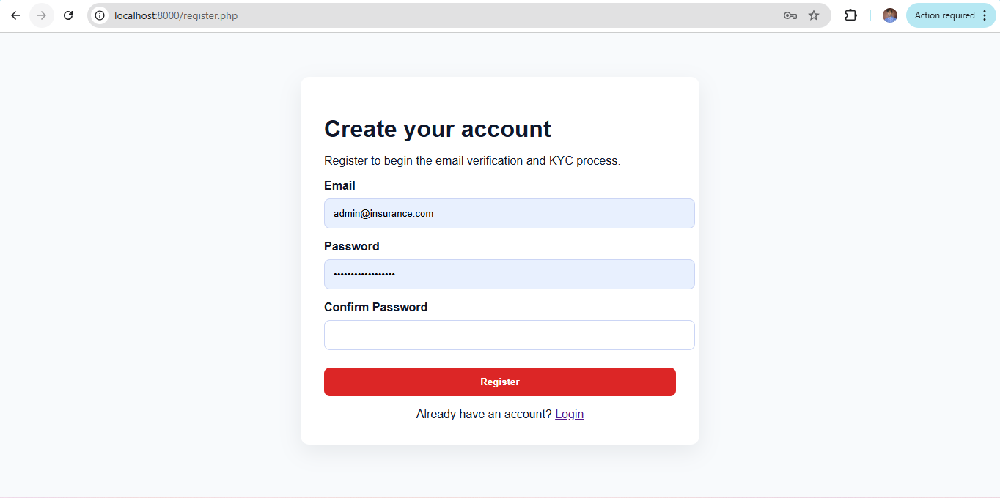

CoxyInsure User Help Documentation.
2. Get Started
Before using CoxyInsure, make sure you have three things ready: a supported browser, a supported Cardano wallet extension, and access to the correct user account that matches your intended wallet address.
2.1 Before You Begin
- Use a modern desktop browser such as Chrome, Edge, or Brave.
- Install a Cardano wallet extension supported by your dApp setup, such as Lace.
- Keep your wallet seed phrase private and never paste it into the dApp.
- Ensure you are signing in with the correct application account before connecting a wallet.
2.2 Typical First-Time User Flow
- Open the public landing page.
- Click Learn More for guidance or Launch App to begin using the protocol.
- Sign in or register if your deployment requires account authentication.
- Connect your wallet.
- Verify or bind the correct wallet to your account.
- Mint membership if required.
- Choose whether to provide liquidity, buy cover, or both.
2.3 Common Things That Block Progress
Wrong wallet connected: you may see a warning or blocked action if the connected wallet does not match the approved wallet for the user account.
Membership not minted: protected features such as pool participation or governance may remain hidden or disabled until membership is minted.
Insufficient ADA: you need enough ADA to pay for network fees and any deposit or premium you are trying to submit.
